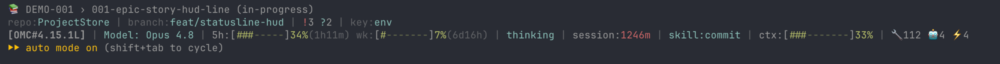

Code without a story gets a reminder
Change three or more source files with no story in progress, and the agent gets one reminder: open a story first. Only edits that really happened count.
Decisions, specs, epics and stories live as Markdown in git. ProjectStore takes your agent in Claude Code or Codex from a task to checked code, through the process engineering teams have used for decades. Now it takes minutes.
src/billing/orders/A chat remembers what you talked about. ProjectStore records what the team decided, why, and how to check the result. The next agent, the next model or you in six months read dated decisions and the options you turned down. Not a chat log.
ADRs, reviews, a backlog, acceptance criteria, links from goal to code. Mature engineering teams have worked this way for twenty years. ProjectStore invents none of it.
Look at any mature engineering team. Before anything is built, someone writes the decision down and others discuss it. The work is split into stories in a backlog. Each story has acceptance criteria. Each requirement can be traced to the code. The backlog comes from Scrum in 1995. Stories and acceptance tests come from XP in 1999. ADRs, short records of a decision and its reasons, come from Michael Nygard in 2011. Design reviews and RFCs are older still.
The process works. Its documents are the most valuable thing a company keeps after a project: why the system is built this way, what counted as done, where each feature lives in the code. But when people run it by hand, it is slow. An ADR takes an afternoon to write and a week to get reviewed. Documents fall behind the code. The board stops matching reality. So teams cut corners, and "agile" becomes an excuse to write nothing down.
The process was always valuable. What was expensive was people running every step of it.
Agents are the opposite. Writing an ADR, splitting an epic into stories or checking a diff against criteria takes an agent minutes, not days. What an agent lacks is what people get for free: memory between sessions, context shared with colleagues, the link from a goal to the code. Every new session starts empty and decides again what was already settled.
ProjectStore puts the two together. Agent speed makes the old process cheap for the first time. Its documents, kept in files beside the code, give agents what they never had: the project's context, linked up to the goals and down to the code. Every step is checked by a second agent that did not write the draft. Speed gets a memory, and memory gets a check.
The links live in the header of each file, and the proof is a line under each acceptance criterion. The agent fills all of it in as it works. The link map shows what each document connects to. The code map shows where each epic's code lives. A new session, a new model or a new colleague starts from this chain, not from nothing.
Not one long "do everything" session. Six steps, each with a result and a check. Click a node in the diagram or a tab.
The agent finds where the task fits in the project. A decision becomes an ADR: a short record of what was chosen and why. Expected behaviour becomes a spec, the rules the code must follow. The work becomes an epic and a story with acceptance criteria. Nothing is saved until you say Yes.
you › let's go with Postgres, not Mongo. we need transactions for orders. agent › That is an architectural decision, so an ADR first, not code. /projectstore:adr "Use Postgres for primary storage" → adr/use-postgres-for-primary-storage.md Context · Decision · Alternatives: MongoDB — rejected because … Save this file? Yes Edit before saving No
The critic is an agent that did not write the draft. It looks for weak assumptions, missing options and ways the plan could fail. It is told that a wrong approval costs 10–100× more than a wrong rejection.
1. Alternatives. "MongoDB — no transactions" has been wrong since 4.0. The real reason is relational constraints. Say that, or the ADR misleads the next reader. 2. Consequences. What happens to the nightly reconcile job? Removed or kept? 3. Decision. "One transaction" for what? Order and lines, not payments. That boundary is the decision, and it is not written down.
After the fixes, you see the file path and the full text, and say Yes. The same Yes updates the folder's index. The epic and the story go into the backlog. The board builds itself from the files; nobody keeps it up to date by hand.
agent › The ADR is fixed: boundary stated, nightly job retired. Save? Yes ✓ saved · ADR index updated /projectstore:epic PAY-001 "Order processing on Postgres" ✓ /projectstore:story PAY-001 "Transactional order writes" ✓ kanban.md · built from the story files ## Backlog - [ ] [[epics/PAY-001/stories/story-transactional-order-writes|PAY-001: Transactional order writes]] #p1
Before coding, the planner looks at where earlier epics landed in the code: which modules already own this area, and what to reuse. The plan goes into the story, and the story moves to in-progress.
earlier epics: BILL-001 → src/billing/ EXP-002 → adapters/csv/ Where. src/billing/orders/, next to BILL-001. No new module. Reuse. withTransaction() in src/db/tx.mjs already retries. Watch out. src/jobs/reconcile.mjs still runs nightly. The ADR retires it. Steps. migration → writer → rollback tests → remove the job. → saved to the story's plan · status: in-progress
The reviewer checks the real diff against every acceptance criterion, including those from the spec. "Done" needs proof: a test, a command that was run, or a specific piece of code.
- [x] Order and lines are written atomically
evidence: tests/orders.test.mjs:41 — rollback when a line insert fails
- [x] Nightly reconcile job removed
evidence: src/jobs/reconcile.mjs deleted · deploy/cron:12
- [ ] Serialization failures are retried
no evidence: retries are set to 0 (write.mjs:58)
verdict: fix before close
When the story closes, the board, the link map and the code map rebuild themselves. The next session starts from the list of decisions, not from nothing. Settled questions stay settled.
✓ story-transactional-order-writes.md status: done · closed_at: 2026-07-04 ✓ kanban.md moved to Done ✓ code-map.md PAY-001 → src/billing/orders/ · deploy/cron ✓ graph.md the story → its spec → the ADR, both ways ── three weeks later · a new session ── the agent starts with a short summary of the vault you › should orders go to Mongo? it would simplify the catalog sync agent › adr/use-postgres-for-primary-storage.md (accepted, 2026-07-03) already settled this. If we need to change it, we write a new ADR that replaces this one.
Change three or more source files with no story in progress, and the agent gets one reminder: open a story first. Only edits that really happened count.
Every new ADR, spec, epic and research note stays marked "not reviewed" until the critic checks it. A short block in your agent's instructions sends it there before anyone treats it as final.
Does the board match the stories? Are links broken, or pointing at missing code? Is work going on with no story open? It runs when a session starts and speaks up only when something is wrong.
↳ Decisions and writes go through approval. An independent agent helps to check; responsibility stays with the team.
Read them in an editor, discuss them in a pull request, open them in Obsidian. The context is not tied to one tool.
An ADR records an architecture decision: the context, the options, the choice and its consequences. When a decision is reversed, its ADR is not deleted; it points to the one that replaced it. Six months later, nobody has the same argument again.
01---
02id: "use-postgres-for-primary-storage"
03title: "Use Postgres for primary storage"
04status: accepted
05date: 2026-07-03
06supersedes: null
07review_status: reviewed
08---
09
10## Context
11An order and its lines must be written atomically.
12
13## Decision
14Postgres 16. Order and lines in one transaction.
15
16## Alternatives Considered
17MongoDB: has transactions, but no relational constraints.
18
19## Consequences
20Migrations become a release step. Nightly reconcile retired.A spec says how the system must behave, as numbered rules you can test. Several stories can implement one spec. Its checks are added to each story's, and a story cannot close while its spec is still a draft.
01---
02id: "transactional-order-writes"
03title: "Transactional order writes"
04status: active
05adr: [use-postgres-for-primary-storage]
06stories: [story-transactional-order-writes]
07---
08
09## Behavioral contracts
101. Order and lines are one transaction.
112. A serialization failure is retried up to 3 times.
123. A repeated request does not create a second order.
13
14## Acceptance
15- [ ] Rollback when a line fails — stories: story-transactional-order-writes
16- [ ] Repeated request covered by a testA story lives inside an epic. It holds the scope, the plan, the acceptance criteria and the proof. code_refs link it to real files. A story has two checkpoints: a plan before work starts, and a close with proof for each criterion.
01---
02id: "story-transactional-order-writes"
03title: "Transactional order writes"
04status: in-progress
05epic: "PAY-001"
06specs: [transactional-order-writes]
07code_refs: [src/billing/orders/]
08---
09
10## Acceptance Criteria
11- [x] Order and lines are written atomically
12 — evidence: tests/orders.test.mjs:41
13- [ ] Serialization failures are retried
14
15## Implementation Plan
16Extend withTransaction() from src/db/tx.mjs.Change the story's status or priority and watch the board move. The line below is exactly what lands in kanban.md. Edit the board by hand and you get a reminder to rebuild it. A stale board is something to fix, not a normal state.
Stories marked superseded, deferred or parked leave the board instead of pretending to wait in line.
The context belongs to the team, not to one developer's chat. ADRs and specs go through pull requests, like code. What gets reviewed is the reasoning.
The developer, the tech lead and QA work from the same decisions and criteria. A person without an agent needs only GitHub or a Markdown editor: it is just files.
The context is available to the whole team, not only to the owner of the chat.
In one project, the API, Web and Platform teams run their own epics on top of shared ADRs and specs. A change to a shared contract is discussed in review with the teams that use it. ProjectStore shows which stories depend on it.
Who owns which artifacts and who signs off on contracts is the team's call.
The planner reads the decisions and the code map. The implementer reads the story and the spec. The reviewer reads the diff and the criteria. Each gets the context it needs, not the whole history of someone else's session. Sessions on the same vault warn each other.
Launching agents and handing work between them is the job of your harness or orchestrator.
One repository of project documents per project, not per person. It sits next to the code repository.
Each person runs /projectstore:bind in their own copy of the code. The setting stays on that machine and is not committed.
A person reviews each decision before it is accepted. The critic checks it before the pull request; your team reviews it inside.
npx projectstore doctor --json runs in CI with no agent and no tokens. It fails the step when it finds problems. reconcile --write can rebuild the board there too.
Two agents or two people in one vault at the same time is normal. Each session knows about the others, and a few simple rules keep them out of each other's way.
Measured in Sessions: how parallel Claude instances coexist ↗ Naming a session after the work it settled on ↗
developer A has worked on PAY-001 since 13:35. you open a second session: ⚠ Multi-session warning — 1 other projectstore session active. Run /projectstore:search <topic> before creating new artifacts. later, once your work settles on one epic: projectstore: this session looks like "pay-001-transactional-order-writes" → /rename pay-001-transactional-order-writes

A real screenshot: this session's 📚 epic › story line, above the status bar you already use.
The advisors check, plan and tidy up, and change nothing. One clerk saves only what you approved, after your Yes.
| Agent | When it runs | What it does | Default model |
|---|---|---|---|
criticread-only · independent | After an ADR, spec, epic, story or design is written or changed | Looks for weak spots, checks every claim against the source and asks how the plan could fail. No flattery. | opus · max |
plannerread-only · independent | Before work on a story starts (story plan) | Looks at where earlier epics live in the code. Says where the change belongs, what to reuse, what to watch out for and in what order to work. | opus · max |
reviewerread-only · independent | After code, before commit or story close | Asks for proof on every acceptance criterion, including the spec's. Then checks correctness, regressions and tests. | opus · max |
librarianread-only · suggests | From time to time, before releases, after the vault grows fast | Finds what no rule can catch: research notes that contradict an accepted ADR, duplicates, missing links, files ready to archive. | opus · max |
archaeologistread-only · suggests | Once, after binding an existing codebase | Finds decisions nobody wrote down, in the code, config files and git history. Suggests ADRs for them, with evidence. | opus · max |
clerkwrites · after your Yes | Only inside a command flow, only after your Yes | Saves exactly what you approved, nothing more. Then rebuilds the board and runs the checks. Writes nothing of its own and asks nothing. | sonnet · max |
The default models are Claude Code's. In Codex each role is a skill of the same name, such as $projectstore-critic, that asks Codex to start the role; it uses the session's model unless you set one.
Plans, critiques, writes code or checks the result. Each role is clear: advisors only read, the clerk only saves what was approved.
Chosen for the task and the budget. /projectstore:agents configure sets one per agent. Changing it does not touch the project's history.
Gives the agent its tools, permissions and session. The plugin installs into Claude Code and Codex. The CLI and MCP server are not tied to any one harness.
| Role | Model* | Harness* |
|---|---|---|
| Planner | Claude | Claude Code |
| Implementer | GPT | Codex |
| Reviewer | Gemini | Gemini CLI |
* An illustration, not a ready integration. You set up each harness yourself. Any agent with a shell or MCP can read the same facts through the read-only MCP tools below.
Every command and agent, automatic reminders, the status line and vault setup. The ready-made way into the loop.
The commands and roles as skills, such as $projectstore-doctor and $projectstore-critic, with lifecycle hooks and the agents block. docs/harnesses.md says what has been verified so far.
The CLI reads the vault and makes only the writes you ask for, with JSON output. The MCP server gives any agent the read-only tools.
npx projectstore mcp --project "$PWD"
Gemini CLI, OpenCode and the rest: the Markdown files work anywhere, and the CLI and MCP read the same vault. Native adapters for them do not ship yet.
↳ ProjectStore is shared project context and a way of working. It is not an agent orchestrator. The vault goes with you: switch models tomorrow and the project continues.
Running the loop is not free, and this page will not pretend otherwise.
Measured on the ProjectStore repo itself. Here the tool builds itself, and every change goes through the full loop, critic included.
What you get: a project manager and a systems analyst who never forget to write things down, run by the agent you already pay for. The files are your real backlog, review record and decision log, not private notes.
Both figures come from README: What it costs — measured, not promised ↗
Install it in Claude Code or Codex, pick a folder for the vault and ask the agent to write the first ADR. No need to move the whole project history in one evening. The archaeologist agent can help with that later.
Install the projectstore plugin from https://github.com/SmartAndPoint/ProjectStore and set it up for this project.
/plugin marketplace add SmartAndPoint/ProjectStore
/plugin install projectstore@SmartAndPoint
/reload-plugins
/projectstore:bind ~/Documents/my-project-vaultThe vault path is an example. Bind then asks a few setup questions and shows what each step will write. Turn on auto-update: /plugin → Marketplaces → SmartAndPoint.
npx projectstore-claude install --project "$PWD"Run it from your project folder. It adds the plugin to Claude Code for this checkout only and prints every command before running it. Then restart Claude Code and bind a vault.
npx projectstore-codex install --project "$PWD"Then restart Codex, approve the ProjectStore hooks when it asks, and run $projectstore-bind ~/Documents/my-project-vault. docs/harnesses.md says what has been verified so far.
/projectstore:status # what is in progress right now
/projectstore:adr "Use Postgres for primary storage"
/projectstore:spec "Transactional order writes"
/projectstore:epic PAY-001 "Order processing on Postgres"
/projectstore:story PAY-001 "Transactional order writes" --spec transactional-order-writes
/projectstore:story plan PAY-001/story-transactional-order-writes # the planner
/projectstore:story close PAY-001/story-transactional-order-writes # the reviewer asks for proof
/projectstore:doctor # checks, no AINo. A memory plugin remembers what the agent said. ProjectStore records what the project decided, as reviewed documents with a status and a date. New work then goes through those documents. The difference shows when you switch models: memory belongs to a model, a vault belongs to the project.
Not necessarily. ProjectStore links decisions, specs, stories and code. You can keep your tracker for planning, and keep the technical context in the vault. There is no automatic sync with other trackers, but a story can hold a link to its ticket.
No. The vault is an ordinary folder of Markdown files. Open it in an editor, browse it on GitHub, or use Obsidian if you like its graph and board. Without the plugin, the files stay just as readable.
No. Every new file or edit is shown to you first, with its path and full text. Then it waits for Yes, Edit before saving, or No. The helpers that watch the conversation only suggest a command. The only agent that can write, the clerk, runs after your Yes and saves exactly what you approved.
Work in separate branches, then review and resolve git conflicts as usual. In one local vault, sessions warn each other and new files are never silently overwritten. But this is not a lock, and it does not sync between machines.
That is allowed, because banning it never works. You get a reminder to run reconcile. doctor spots a board or index that no longer matches the files, and reconcile rebuilds them from the source files.
ProjectStore needs no server: the vault lives where you put it. Which files the agent reads and what reaches the model provider depends on your harness and its permissions. Keep secrets out of project documents and check your team's access rules.
No. Critic and reviewer runs use your model's budget: 22.5% of spend on the ProjectStore repo itself, typically 10–15% of a weekly limit. The routine checks, doctor and reconcile, use no AI. Match the depth of the process to the risk of the change.
Nothing is lost: the vault is plain Markdown in git. The automatic part, the commands, the roles and the reminders, installs into Claude Code and Codex, and the two can work one project side by side. Any other agent reads the same facts through the CLI or the MCP server.